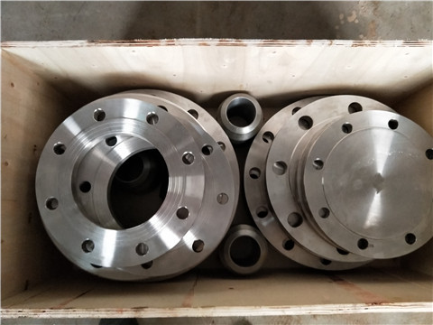

HG20592-2009最新法兰标准 高压对焊法兰的生产标准：由于容器筒体的公称直径和管子的公称直径所代表的具体尺寸不同，所以，同样公称直径的容器法兰和管法兰，它们的尺寸亦不相同，二者不能互相代用。管法兰的型式除平焊、对焊法兰外，还有铸钢法兰、铸铁法兰、活套法兰、螺纹法兰等。管法兰标准除GB9119.7-88外，常用标准还有：化工部标准HG20592～HG20602-97；中石化标准SH3406-96等。其中化工部标准中分为欧洲体系、美洲体系等，我国常用的为欧洲体系。由于操作压力不高，直径不大，可采用甲型平焊法兰、平面密封面，垫片材料选用石棉橡胶板。联接螺栓选用材料为Q235-A，选用2"、4"的法兰。对焊法兰的压力等级、材质、标准等具有不同的特性和特点。
HG20592-2009最新法兰定做 在使用中按照一定的原理和方式和方法使用，HG20592-2009最新法兰标准能够按照相应的标准生产和加工，保证在使用中具有良好的使用价值和作用。对焊法兰在使用和生产中具有不同的生产标准，按照相应的标准生产和使用，能够保证对焊法兰在实际中的使用价值和作用。对焊法兰的生产和执行标准：国标，美标，日标，德标，化工部标准，机械部标准，压力容器标准。高压对焊法兰的范围应用：HG20592-2009最新法兰定做锅炉压力容器、石油、化工、造船、、冶金、机械、食品等行业.运用接触理论和有限元方法，螺栓联接法兰盘结构的接触问题。HG20592-2009最新法兰标准建立了盘式联接结构的有限元模型，给出了盘式联接接触的接触条件和刚度修改准则。充分考虑了联接螺栓预紧力对结构刚度的影响，将其合理地转化为等效节点初载荷进行处理。
河北HG20592-2009最新法兰定做厂家 并推导出在法兰盘对接面上有气密性要求时求解最佳预紧力的公式。在进行理论计算的同时，还设计了试验对其进行了验证。最后开发出一套用于对盘式联接件进行有限元分析的程序系统。采用的分析方法和由此得出的结论以及开发出的软件具有一定的工程意义。对焊法兰在进行了阴极保护的输配管网的楼幢阀处及需进行电位分片（区）隔离的埋地管阀井中使用。对焊法兰进行埋地输配管网的分片（区）隔离可以较清楚地掌握各片（区）管网的阴极保护情况；当相邻片（区）的保护电位相差较大时且有达不到保护电位要求的片（区）时，可将达不到保护电位要求的片（区）进行特殊处理直至符合要求为止，以后再连片运行；对阴极保护分片（区）进行评价，针对不同的阴极保护情况进行处理；当相邻片（区）的保护电位相同（或相近）且达到保护电位要求时，可用跨条将绝缘法兰两边连通进行统一保护。